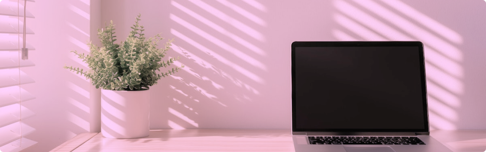
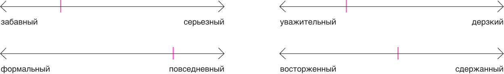
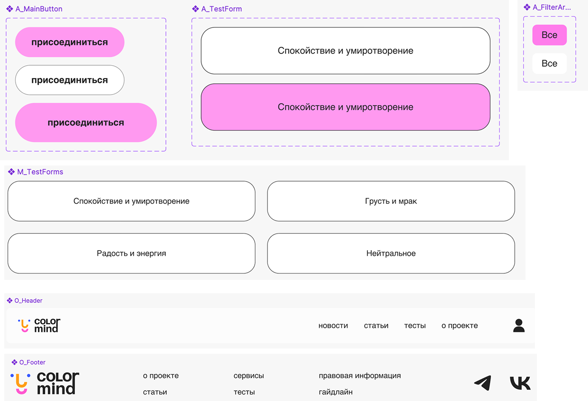
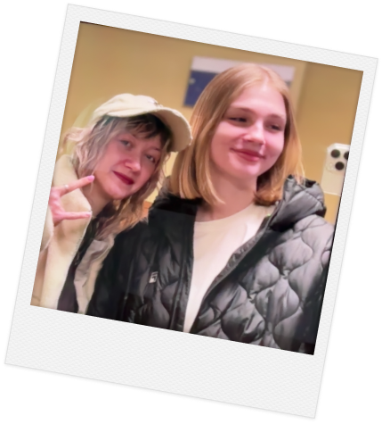
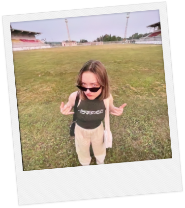

colormind стайлгайд
о бренде
миссия и ценности
Мы стремимся сделать психологию цвета доступной и понятной для всех. Colormind предоставляет доступ к достоверной информации по психологии цвета от экспертов в этой области
образование
вдохновение
самовыражение
понимание себя
Тон голоса
Логотип
Логотип Colormind, несмотря на свою простоту, обладает игривым и дружелюбным характером
Графический символ состоит из упрощённых округлых форм ярких контрастных цветов. Формы расположены так, чтобы создать подобие лица: два маленьких синих круга изображают глаза, оранжевая форма образует нос, а розовая — улыбку. Формы намеренно простые и геометрические, в них приоритет отдан ясности и запоминаемости, а не сложным деталям
игривый и располагающий к себе
Абстрактная форма, напоминающая лицо (составленная из округлых, ярко окрашенных фигур), создаёт дружелюбное и располагающее к себе впечатление
современный и минималистичный
Формы простые и геометрические, без чрезмерно сложных или детализированных элементов
выразительный и коммуникативный
Яркие цвета привлекают внимание и намекают на энергичность и вовлечённость. «Улыбка» внизу — это мгновенно узнаваемый символ счастья и позитива
символическая
связь
Графика предполагает связь между цветом и эмоциями. Сочетание фигур напоминает упрощённое изображение лица, что предполагает связь между цветом и эмоциональной реакцией
охранное поле
Верхняя и нижняя части находятся на расстоянии 1 х от логотипа, измеряемом с использованием х-высоты буквы «i» в поле «mind». Левая и правая стороны — 1,5 х от логотипа
так можно:
Логотип может применяться в других цветах (они должны быть контрастными и использоваться в фирменном стиле)
В графическом символе могут применяться различные эмоции в зависимости от контекста
так нельзя:
Логотип недопустимо искажать (поворачивать, растягивать), разбирать знак на части, располагать его слишком близко к тексту
типографика
заголовки
TT Firs Neue
Aa Bb Cc Dd Ee Ff Gg Hh Ii Jj Kk Ll Mm Nn Oo Pp Qq Rr Ss Tt Uu Vv WW Xx Yy Zz 1234567890
текст
Helvetica
Aa Bb Cc Dd Ee Ff Gg Hh Ii Jj Kk Ll Mm Nn Oo Pp Qq Rr Ss Tt Uu Vv WW Xx Yy Zz 1234567890
акцентный заголовок
заголовок
подзаголовок
большой текст
маленький текст
маленький текст
цвета
черно-коричневый
#222222
дымчато-белый
#F7F7F7
телегрей
#909090
розовая фуксия
#FF7CEC
лавандовый розовый
#FF99F0
дополнительные цвета
желто-зеленый
#AED628
одуванчиковый
#FFD875
перванш
#B8C4FF
лососевый крайола
#FF9FA7
- Фон главной страницы
- Фон карточек товаров и статей
- Фон меню навигации.
- Заголовки
- Основной текст статей и описаний товаров
- Надписи на кнопках
- Метаданные статей (дата публикации, автор)
- Разделительные линии
- Иконки навигации
- Кнопки призыва к действию
- Заголовки разделов
- Графические элементы, привлекающие внимание к дизайну.
сетка
Контент должен размещаться в колонках, обеспечивая согласованность и адаптивность дизайна. Используйте сетку для структурирования макета и выравнивания элементов.
- Desktop: 12 колонок с отступами по 20px между ними и полями по 40px по краям.
- Mobile: 4 колонки с отступами по 15px между ними и полями по 18px по краям.
desktop
mobile
графика
Colormind использует простые и яркие образы для создания дружелюбной и запоминающейся атмосферы, в которой цвет является основным элементом, несущим эмоциональную нагрузку
общие принципы:
соответствие тематике
все визуальные элементы должны четко соответствовать тематике раздела или контента, который они иллюстрируют
минимализм
графика не должна быть перегруженной деталями или визуальным шумом
визуальная иерархия
графика должна поддерживать визуальную иерархию, помогая пользователю быстро ориентироваться на странице и выделять важную информацию
эмоциональная связь
графика должна вызывать положительные эмоции и создавать приятное впечатление от использования приложения
Стиль персонажей должен оставаться простым и минималистичным, как и остальная часть айдентики. Не добавлять лишних деталей и сложных фонов
Все персонажи должны использоваться в едином стиле и быть легко узнаваемыми. При этом, стоит сохранить их индивидуальность, то есть не менять лица и цвета, например, чтобы не терять связь с цветовым символизмом
UI-компоненты
носители
Команда
 Кира
Диана